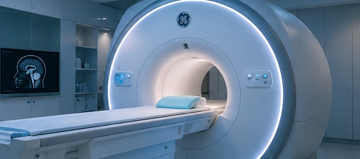

01 · Radiography
X-ray and digital radiography
Digital radiographic imaging for a range of clinical indications.
A range of diagnostic imaging and image-guided services supporting patients and referring clinicians.
The CT and MRI photographs are generic illustrative images and do not represent confirmed photographs of the hospital’s installed equipment.
Digital radiographic imaging for a range of clinical indications.
Ultrasound examinations and colour Doppler imaging.

CT examinations, including contrast-enhanced studies.

MRI services including neuroimaging and musculoskeletal studies.
Mammography for screening and diagnosis, closely linked with the Cancer Institute.
Image-guided procedures such as biopsies and drainages.
Imaging services for health check-up packages.
Emergency imaging support for the hospital's 24-hour Accident & Emergency service.